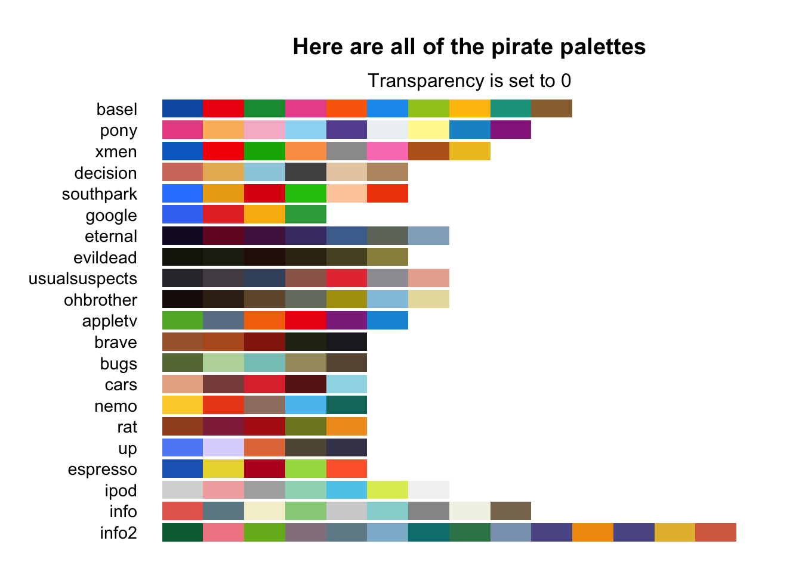
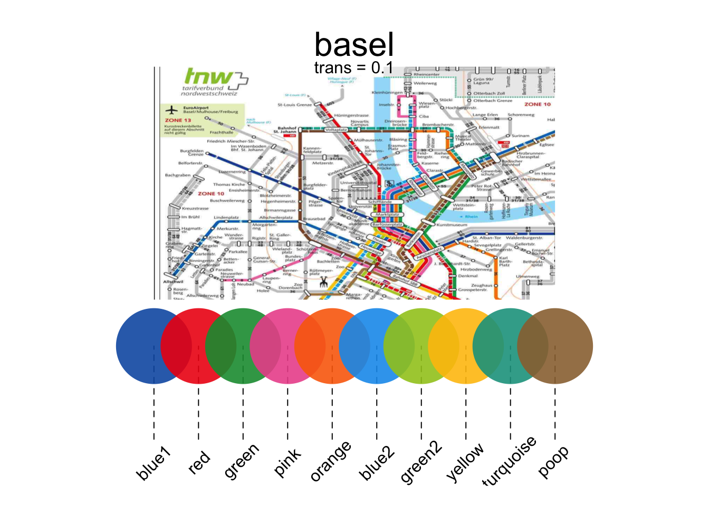
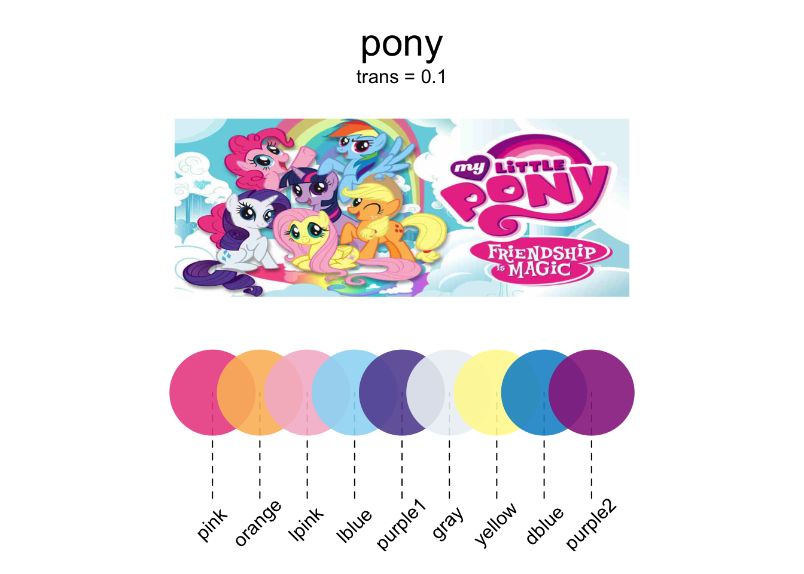

Chapter 12 Plotting (II)
12.1 More colors
12.1.1 piratepal()
The yarrr package comes with several color palettes ready for you to use. The palettes are contained in the piratepal() function. To see all the palettes, run piratepal("all")
yarrr::piratepal("all")
To see a palette in detail, including a picture of what inspired the palette, include the name of the palette in the first argument, (e.g.; "basel") and then specify the argument plot.result = TRUE. Here are a few of my personal favorite palettes:
# Show me the basel palette
yarrr::piratepal("basel",
plot.result = TRUE,
trans = .1) # Slightly transparent
# Show me the pony palette
yarrr::piratepal("pony",
plot.result = TRUE,
trans = .1) # Slightly transparent
# Show me the evildead palette
yarrr::piratepal("evildead",
plot.result = TRUE,
trans = .1) # Slightly transparent
Once you find a color palette you like, you can save the colors as a vector and assigning the result to an object. For example, if I want to use the "google" palette and use them in a barplot, I would do the following:
# Save the South Park palette to a vector
google.cols <- piratepal(palette = "google",
trans = .2)
# Create a barplot with the google colors
barplot(height = 1:5,
col = google.cols,
border = "white",
main = "Barplot with the google palette")
12.1.2 RColorBrewer
One package that is great for getting (and even creating) palettes is RColorBrewer. Here are some of the palettes in the package. The name of each palette is in the first column, and the colors in each palette are in each row:
library("RColorBrewer")
display.brewer.all()
12.1.3 colorRamp2
My favorite way to generate colors that represent numerical data is with the function colorRamp2 in the circlize package (the same package that creates that really cool chordDiagram from Chapter 1). The colorRamp2 function allows you to easily generate shades of colors based on numerical data.
The best way to explain how colorRamp2 works is by giving you an example. Let’s say that you want to want to plot data showing the relationship between the number of drinks someone has on average per week and the resulting risk of some adverse health effect. Further, let’s say you want to color the points as a function of the number of packs of cigarettes per week that person smokes, where a value of 0 packs is colored Blue, 10 packs is Orange, and 30 packs is Red. Moreover, you want the values in between these break points of 0, 10 and 30 to be a mix of the colors. For example, the value of 5 (half way between 0 and 10) should be an equal mix of Blue and Orange.
When you run the function, the function will actually return another function that you can then use to generate colors. Once you store the resulting function as an object (something like my.color.fun You can then apply this new function on numerical data (in our example, the number of cigarettes someone smokes) to obtain the correct color for each data point.
For example, let’s create the color ramp function for our smoking data points. I’ll use colorRamp2 to create a function that I’ll call smoking.colors which takes a number as an argument, and returns the corresponding color:
# Create color function from colorRamp2
smoking.colors <- circlize::colorRamp2(breaks = c(0, 15, 25),
colors = c("blue", "green", "red"),
transparency = .2)
plot(1, xlim = c(-.5, 31.5), ylim = c(0, .3),
type = "n", xlab = "Cigarette Packs",
yaxt = "n", ylab = "", bty = "n",
main = "colorRamp2 Example")
segments(x0 = c(0, 15, 30),
y0 = rep(0, 3),
x1 = c(0, 15, 30),
y1 = rep(.1, 3),
lty = 2)
points(x = 0:30,
y = rep(.1, 31), pch = 16,
col = smoking.colors(0:30))
text(x = c(0, 15, 30), y = rep(.2, 3),
labels = c("Blue", "Green", "Red"))
To see this function in action, check out the the margin Figure~ for an example, and check out the help menu for more information and examples.
# Create Data
drinks <- round(rnorm(100, mean = 10, sd = 4), 2)
smokes <- drinks + rnorm(100, mean = 5, sd = 2)
risk <- 1 / (1 + exp(-(drinks + smokes) / 20 + rnorm(100, mean = 0, sd = 1)))
# Create color function from colorRamp2
smoking.colors <- circlize::colorRamp2(breaks = c(0, 15, 30),
colors = c("blue", "green", "red"),
transparency = .3)
# Bottom Plot
par(mar = c(4, 4, 5, 1))
plot(x = drinks,
y = risk,
col = smoking.colors(smokes),
pch = 16, cex = 1.2, main = "Plot of (Made-up) Data",
xlab = "Drinks", ylab = "Risk")
mtext(text = "Point color indicates smoking rate", line = .5, side = 3)
12.1.4 Getting colors with a kuler

Figure 12.1: Stealing colors from the internet. Not illegal (yet).
One of my favorite tricks for getting great colors in R is to use a color kuler. A color kuler is a tool that allows you to determine the exact RGB values for a color on a screen. For example, let’s say that you wanted to use the exact colors used in the Google logo. To do this, you need to use an app that allows you to pick colors off your computer screen. On a Mac, you can use the program called “Digital Color Meter.” If you then move your mouse over the color you want, the software will tell you the exact RGB values of that color. In the image below, you can see me figuring out that the RGB value of the G in Google is R: 19, G: 72, B: 206. Using the rgb() function, I can convert these RGB values to colors in R. Using this method, I figured out the four colors of Google!
# Store the colors of google as a vector:
google.col <- c(
rgb(19, 72, 206, maxColorValue = 255), # Google blue
rgb(206, 45, 35, maxColorValue = 255), # Google red
rgb(253, 172, 10, maxColorValue = 255), # Google yellow
rgb(18, 140, 70, maxColorValue = 255)) # Google green
# Print the result
google.col
## [1] "#1348CE" "#CE2D23" "#FDAC0A" "#128C46"The vector google.col now contains the values #1348CE, #CE2D23, #FDAC0A, #128C46. These are string values that represent colors in a way R understands. Now I can use these colors in a plot by specifying col = google.col!
plot(1,
xlim = c(0, 7),
ylim = c(0, 1),
type = "n",
main = "Using colors stolen from a webpage")
points(x = 1:6,
y = rep(.4, 6),
pch = 16,
col = google.colors[c(1, 2, 3, 1, 4, 2)],
cex = 4)
text(x = 1:6,
y = rep(.7, 6),
labels = c("G", "O", "O", "G", "L", "E"),
col = google.col[c(1, 2, 3, 1, 4, 2)],
cex = 3)
12.2 Plot Margins

Figure 12.2: Margins of a plot.
All plots in R have margins surrounding them that separate the main plotting space from the area where the axes, labels and additional text lie. To visualize how R creates plot margins, look at margin Figure 12.2.
You can adjust the size of the margins by specifying a margin parameter using the syntax par(mar = c(bottom, left, top, right)), where the arguments bottom, left … are the size of the margins. The default value for mar is c(5.1, 4.1, 4.1, 2.1). To change the size of the margins of a plot you must do so with par(mar) before you actually create the plot.
Let’s see how this works by creating two plots with different margins:In the plot on the left, I’ll set the margins to 3 on all sides. In the plot on the right, I’ll set the margins to 6 on all sides.
# First Plot with small margins
par(mar = c(2, 2, 2, 2)) # Set the margin on all sides to 2
plot(1:10)
mtext("Small Margins", side = 3, line = 1, cex = 1.2)
mtext("par(mar = c(2, 2, 2, 2))", side = 3)
# Second Plot with large margins
par(mar = c(5, 5, 5, 5)) # Set the margin on all sides to 6
plot(1:10)
mtext("Large Margins", side = 3, line = 1, cex = 1.2)
mtext("par(mar = c(5, 5, 5, 5))", side = 3)
You’ll notice that the margins are so small in the first plot that you can’t even see the axis labels, while in the second plot there is plenty (probably too much) white space around the plotting region.
In addition to using the mar parameter, you can also specify margin sizes with the mai parameter. This acts just like mar except that the values for mai set the margin size in inches.
12.3 Arranging plots with par(mfrow) and layout()
R makes it easy to arrange multiple plots in the same plotting space. The most common ways to do this is with the par(mfrow) parameter, and the layout() function. Let’s go over each in turn:

Figure 12.3: A 3 x 3 matrix of plotting regions created by par(mfrow = c(3, 3))
The mfrow and mfcol parameters allow you to create a matrix of plots in one plotting space. Both parameters take a vector of length two as an argument, corresponding to the number of rows and columns in the resulting plotting matrix. For example, the following code sets up a 3 x 3 plotting matrix.
par(mfrow = c(2, 2)) # Create a 2 x 2 plotting matrix
# The next 4 plots created will be plotted next to each other
# Plot 1
hist(rnorm(100))
# Plot 2
plot(pirates$weight,
pirates$height, pch = 16, col = gray(.3, .1))
# Plot 3
pirateplot(weight ~ Diet,
data = ChickWeight,
pal = "info", theme = 3)
# Plot 4
boxplot(weight ~ Diet,
data = ChickWeight)Figure 12.4: Arranging plots into a 2x2 matrix with par(mfrow = c(2, 2))
When you execute this code, you won’t see anything happen. However, when you execute your first high-level plotting command, you’ll see that the plot will show up in the space reserved for the first plot (the top left). When you execute a second high-level plotting command, R will place that plot in the second place in the plotting matrix - either the top middle (if using par(mfrow) or the left middle (if using par(mfcol)). As you continue to add high-level plots, R will continue to fill the plotting matrix.
So what’s the difference between par(mfrow) and par(mfcol)? The only difference is that while par(mfrow) puts sequential plots into the plotting matrix by row, par(mfcol) will fill them by column.
When you are finished using a plotting matrix, be sure to reset the plotting parameter back to its default state by running par(mfrow = c(1, 1)):
# Put plotting arrangement back to its original state
par(mfrow = c(1, 1))12.3.1 Complex plot layouts with layout()
| Argument | Description |
|---|---|
mat |
A matrix indicating the location of the next N figures in the global plotting space. Each value in the matrix must be 0 or a positive integer. R will plot the first plot in the entries of the matrix with 1, the second plot in the entries with 2,… |
widths |
A vector of values for the widths of the columns of the plotting space. |
heights |
A vector of values for the heights of the rows of the plotting space. |
While par(mfrow) allows you to create matrices of plots, it does not allow you to create plots of different sizes. In order to arrange plots in different sized plotting spaces, you need to use the layout() function. Unlike par(mfrow), layout is not a plotting parameter, rather it is a function all on its own. The function can be a bit confusing at first, so I think it’s best to start with an example. Let’s say you want to place histograms next to a scatterplot: Let’s do this using layout:
We’ll begin by creating the layout matrix, this matrix will tell R in which order to create the plots:
layout.matrix <- matrix(c(0, 2, 3, 1), nrow = 2, ncol = 2)
layout.matrix
## [,1] [,2]
## [1,] 0 3
## [2,] 2 1Looking at the values of layout.matrix, you can see that we’ve told R to put the first plot in the bottom right, the second plot on the bottom left, and the third plot in the top right. Because we put a 0 in the first element, R knows that we don’t plan to put anything in the top left area.
Now, because our layout matrix has two rows and two columns, we need to set the widths and heights of the two columns. We do this using a numeric vector of length 2. I’ll set the heights of the two rows to 1 and 2 respectively, and the widths of the columns to 1 and 2 respectively. Now, when I run the code layout.show(3), R will show us the plotting region we set up:
layout.matrix <- matrix(c(2, 1, 0, 3), nrow = 2, ncol = 2)
layout(mat = layout.matrix,
heights = c(1, 2), # Heights of the two rows
widths = c(2, 2)) # Widths of the two columns
layout.show(3)
Figure 12.5: A plotting layout created by setting a layout matrix with two rows and two columns. The first row has a height of 1, and the second row has a hight of 2. Both columns have the same width of 2.
Now we’re ready to put the plots together
# Set plot layout
layout(mat = matrix(c(2, 1, 0, 3),
nrow = 2,
ncol = 2),
heights = c(1, 2), # Heights of the two rows
widths = c(2, 1)) # Widths of the two columns
# Plot 1: Scatterplot
par(mar = c(5, 4, 0, 0))
plot(x = pirates$height,
y = pirates$weight,
xlab = "height",
ylab = "weight",
pch = 16,
col = yarrr::piratepal("pony", trans = .7))
# Plot 2: Top (height) boxplot
par(mar = c(0, 4, 0, 0))
boxplot(pirates$height, xaxt = "n",
yaxt = "n", bty = "n", yaxt = "n",
col = "white", frame = FALSE, horizontal = TRUE)
# Plot 3: Right (weight) boxplot
par(mar = c(5, 0, 0, 0))
boxplot(pirates$weight, xaxt = "n",
yaxt = "n", bty = "n", yaxt = "n",
col = "white", frame = F)
Figure 12.6: Adding boxplots to margins of a scatterplot with layout().
12.4 Additional plotting parameters
To change the background color of a plot, add the command par(bg = col) (where col is the color you want to use) prior to creating the plot. For example, the following code will put a light gray background behind a histogram:
par(bg = gray(.9)) # Create a light gray background
hist(x = rnorm(100), col = "skyblue")
Here’s a more complex example:
parrot.data <- data.frame(
"ship" = c("Drunken\nMonkeys", "Slippery\nSnails", "Don't Ask\nDon't Tell", "The Beliebers"),
"Green" = c(200, 150, 100, 175),
"Blue " = c(150, 125, 180, 242))
# Set background color and plot margins
par(bg = rgb(61, 55, 72, maxColorValue = 255),
mar = c(6, 6, 4, 3))
plot(1, xlab = "", ylab = "", xaxt = "n",
yaxt = "n", main = "", bty = "n", type = "n",
ylim = c(0, 250), xlim = c(.25, 5.25))
# Add gridlines
abline(h = seq(0, 250, 50),
lty = 3,
col = gray(.95), lwd = 1)
# y-axis labels
mtext(text = seq(50, 250, 50),
side = 2, at = seq(50, 250, 50),
las = 1, line = 1, col = gray(.95))
# ship labels
mtext(text = parrot.data$ship,
side = 1, at = 1:4, las = 1,
line = 1, col = gray(.95))
# Blue bars
rect(xleft = 1:4 - .35 - .04 / 2,
ybottom = rep(0, 4),
xright = 1:4 - .04 / 2,
ytop = parrot.data$Blue,
col = "lightskyblue1", border = NA)
# Green bars
rect(xleft = 1:4 + .04 / 2,
ybottom = rep(0, 4),
xright = 1:4 + .35 + .04 / 2,
ytop = parrot.data$Green,
col = "lightgreen", border = NA)
legend(4.5, 250, c("Blue", "Green"),
col = c("lightskyblue1", "lightgreen"), pch = rep(15, 2),
bty = "n", pt.cex = 1.5, text.col = "white")
# Additional margin text
mtext("Number of Green and Blue parrots on 4 ships",
side = 3, cex = 1.5, col = "white")
mtext("Parrots", side = 2, col = "white", line = 3.5)
mtext("Source: Drunken survey on 22 May 2015", side = 1,
at = 0, adj = 0, line = 3, font = 3, col = "white")Figure 12.7: Use par(bg = my.color) before creating a plot to add a colored background.